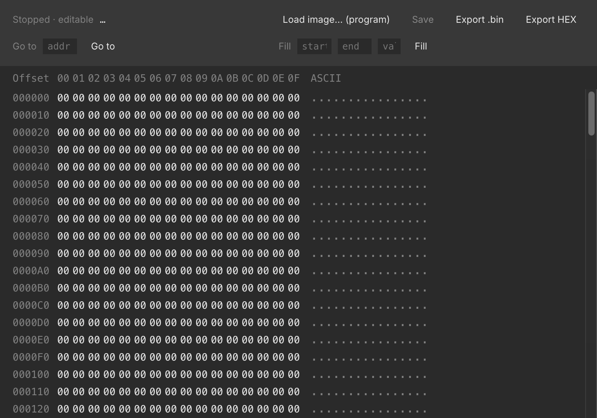

Memory Chips & the Inspector
Chip Hippo's memory catalog covers both sides of the RAM/ROM divide: address an 8K/32K/128K SRAM for scratch storage that behaves exactly like real silicon (it forgets everything at power-off), or a ROM/EPROM/EEPROM that holds a real byte image between runs — the same image, opened in a floating inspector, that you can browse, hand-edit, and program from a file. This page covers what each kind actually stores, how to get data into a ROM, and how the inspector works.
Volatile vs. non-volatile
Every memory chip in the catalog is one of two kinds, and the difference matters more than the pinout:
- Volatile (SRAM) —
ram-8k,HM62256(32K×8),AS6C1024(128K×8). Contents live only for the current run: they start as random noise every time you press Run, whatever the circuit writes stays readable until you Stop, and then it's gone. Nothing is ever saved to disk for these parts — there's no image to lose, because there was never a file. - Non-volatile (ROM/EPROM/EEPROM) —
rom-8k,28C16(2K×8 EEPROM),AM27C1024(64K×16 EPROM). These chips are backed by a real file on disk in the app's own working folder, so their contents persist across runs and across closing and reopening the document. An unprogrammed chip reads back random noise too — just like an unprogrammed EPROM off the shelf — until you program it. (Exactly which file backs which chip is an internal bookkeeping detail you never need to touch by hand.)
The chip's blurb in the parts palette and pin-assignments window always says which kind it is, and its behavior — read timing, chip-enable/output- enable pins, address/data bus width — is otherwise ordinary combinational logic. See The 74xx Chip Library for the full catalog and the pin-assignments window.
Programming a ROM
The circuit itself can never write a non-volatile chip. An EEPROM or EPROM's real write cycle isn't something the simulator drives — Chip Hippo treats every non-volatile part as read-only from the circuit's point of view, the same way you couldn't reprogram a 27C-series EPROM just by wiggling its pins on a breadboard. Any write a chip reports during simulation is silently dropped if the chip is non-volatile.
The only way to put data into a ROM is the external programmer:
- Right-click the chip on the desk.
- Choose Load image… (program).
- Pick a
.bin(raw bytes) or.hex(Intel HEX) file.
The image is copied to the start of the chip's memory. If the file is smaller than the chip, only the start is overwritten and the rest is left alone; if it's larger, it's truncated to fit — either way you get a warning telling you what happened. Once programmed, the chip is flagged programmed, which rides undo/redo like any other edit, and the chip keeps its new contents the next time you open the document or press Run.
Programming is only available while editing is unlocked (i.e. the simulation is stopped) — see Running a Simulation.
The memory inspector
Every memory chip — SRAM or ROM alike — has a floating inspector window: double-click the chip on the desk, or right-click it and choose Inspect memory…. It's a hex/ASCII grid, one row per 16 bytes, with a toolbar for Go to (jump to an address), Fill (write a byte value across a start/end range), Save, and Import/Export.

What you can do depends on whether the simulation is running and what kind of chip it is:
- Stopped, ROM/EPROM/EEPROM — the grid is editable. Click a hex or ASCII cell to type a new byte value directly, or select a range and Fill it. Save writes your edits back to the chip's file and flags it programmed, exactly like using the external programmer.
- Stopped, SRAM — shows the chip's last contents from before it was stopped (or noise, if it's never been run) as a read-only snapshot; there's nothing to save, since SRAM has no file.
- Running, any chip — the grid is a live, read-only mirror of the simulator's own byte image. Bytes the circuit writes are tinted as they change, so you can watch a counter or a shift register fill memory in real time. Editing resumes once you stop.
The inspector also shows the chip's backing-file path for a non-volatile
part (handy for locating the raw .bin outside the app), and stays open and
live-updating as long as the desk document does.
Import & export (Intel HEX)
Beyond loading a raw .bin, the inspector's toolbar can Export the
current contents as either a raw .bin or an Intel HEX .hex file —
useful for round-tripping through an assembler toolchain or another tool
that expects the hex format. The external programmer (above) accepts either
extension coming in: a .hex file is decoded before it's written to the
chip.
A missing backing file
Because a ROM's contents live in a file separate from the desk document, it's possible for that file to go missing without the document changing — the classic case is deleting the chip and then undoing the delete. If Chip Hippo finds a chip flagged programmed but its backing file is gone, it recreates the file as fresh noise and warns you that the chip's data was lost, so you know to reload the image rather than trusting stale contents.
See also The 74xx Chip Library for the memory chips in context with the rest of the catalog, and Files, Autosave & Undo for how the desk document itself is saved and versioned.